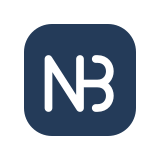

The keys stay with you.
Your recovery words and private keys stay on your device. Your wallet file is encrypted with your password.

NorthboundA self-custodial desktop wallet for TrueNorth. Keep your keys. Send with clarity. Travel light.
Get Northbound


Welcome to Northbound · 1 / 4
A small desktop app, with the important work kept close to you.
Read the security modelYour recovery words and private keys stay on your device. Your wallet file is encrypted with your password.
Review the recipient, amount, and fee before you sign. Transactions are signed locally, then sent to the server for broadcast.
Your wallet uses the server’s blockchain data to display balances and history, while signing stays on your device.
Latest release
Unzip the download, move Northbound to Applications, then open it. Requires an Apple silicon Mac.
The app is not notarized by Apple. If macOS blocks it, follow Apple’s opening instructions only if you trust the download.
Open the MSI download and follow the installer, then launch Northbound from the Start menu. Requires an x64 PC.
The installer is unsigned, so Windows may show an unknown-publisher warning. Check that your download came from the Northbound GitHub releases before proceeding.
In your file manager, open the AppImage’s properties and allow it to run as a program. Then double-click it. Requires an x64 system.
Permission labels vary by desktop. See the AppImage quickstart for help.
Install Northbound on another computer and restore your wallet with your twelve recovery words. Recovery needs a server that can scan your wallet’s history. Keep the words private and offline: anyone with them can spend your funds.
If you lose both your wallet file and your recovery words, Northbound cannot recover your funds.
Your recovery words, private keys, and password stay on your device. Transactions are signed locally, so the server cannot spend your funds. It receives public addresses and signed transactions, and can see the addresses you query.
You still rely on the server for accurate blockchain data. It can withhold or delay information. Read the security model for details.
No. Northbound connects to a server backed by a TrueNorth full node for balances, transaction history, fees, and broadcasting. You need an internet connection to fetch that data and send transactions.
Northbound is an independent community project, written in Rust and Dioxus and released under the MIT License.
Explore the repository